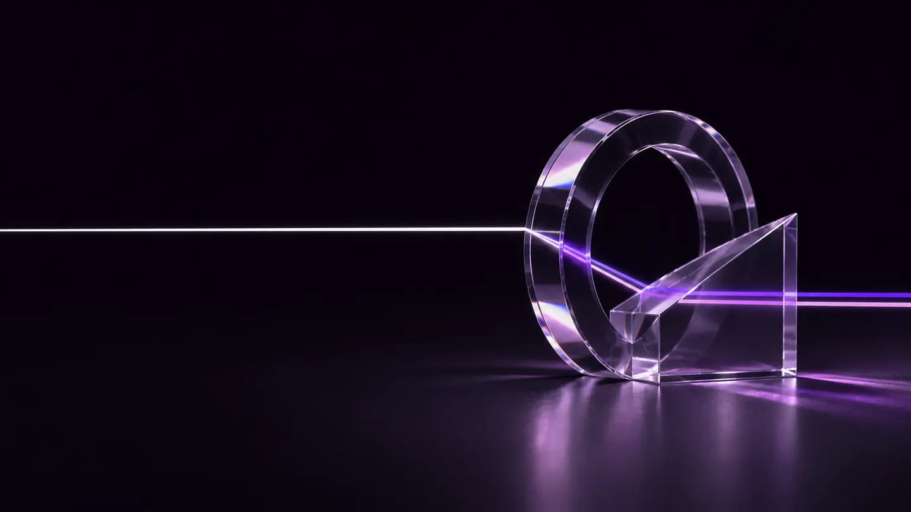

Claude Code modu
Aynı sistem, Claude Code'un içinde. Claude düzenleme yaparken indeksi güncel tutan, ajanı indeksi kullanmaya yönlendiren ve hepsini animasyonlu bir maskotla bir panelde gösteren bir mod.
Neden bir mod?
Modelin döngüde olduğu, önceden kayıtlı ölçümlerde ajan, kendisine Verinoda sunulduğunda onu 57 oturumun yalnızca 6'sında kullandı. Kimsenin çağırmadığı ve kimsenin yenilemediği bir indeks işe yaramaz. Mod, indeksi taze tutar ve gerektiğinde ajanın yoluna koyar.
Mod, Claude Code'a neler katar.
Hep güncel indeks
Her düzenleme not edilir; turun sonunda tek bir verinoda update --fast çalışır (2.900 dosyada yaklaşık 20 sn; 130–155 sn yerine).
Ajan yönlendirme
analyze, project_query ve run_tool modelin araç listesinde durur; tek paragraflık kural, “neden, ne zaman, ne etkiler” sorularında önce analyze çağırmasını söyler.
Sıkıştırmada kartlar
Claude Code konuşmayı sıkıştırırken özetleyiciye, okunan ya da düzenlenen her dosya için tek satır verilir: yol, uzunluk, amaç, tanımlar, import'lar.
Düzenleme denetimi (kapalı)
/verinoda-check on: bir düzenlemeden sonra değişen satırlardaki, projede hiçbir yerde olmayan isimler modele söylenir. Ölçümde işe yaramadığı için varsayılan kapalı.
Canlı panel ve maskot
/verinoda-panel: indeks durumunu, denetim ayarını ve Verinoda çalışırken kodu okuyan animasyonlu bir mor maskotu gösteren Türkçe bir panel.
Cevap dili
/verinoda-lang auto, tr, en ya da herhangi bir dil. Modele yalnızca değiştiğinde gönderilir.
Claude Code içinde
Depodaki SYMBIOSIS.md ile başlayın; mod claude-mods/verinoda-live klasöründedir.
pip install verinodaya da: uv tool install verinoda
cd your-project && verinoda setup .İndeksi kurar
claude --plugin-dir <depo>/claude-mods/verinoda-liveModu Claude Code'a bağlar
/verinodaClaude Code içinden indekse sorun
/verinoda-lang trCevap dilini ayarlayın
Ölçülen
Mod'un etkisini modelin döngüde olduğu, önceden kayıtlı çalışmalarda ölçtük. Sonuçlar karışık ve hepsi yayımlanıyor.
Küçük derlemler
Aynı bilgiler; %16 daha az girdi token'ı ve %29 daha az araç çağrısı (37–226 dosya).
On gerçek depo
Aynı bilgiler; %14 daha fazla girdi token'ı ve %16 daha az çıktı token'ı.
Eski indeks
300+ dosyalık projelerde eski indeks yaklaşık beşte bir daha fazla girdi token'ına mal oldu; modun tuttuğu taze indeks bunu kaldırdı (iki çalışmanın birinde).
- Tür
- Claude Code modu
- Lisans
- Apache-2.0
- Bağlantılar
- GitHub